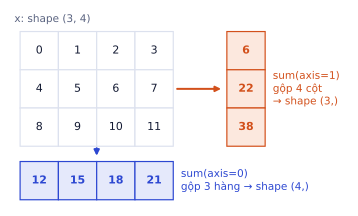
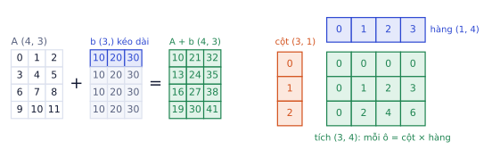
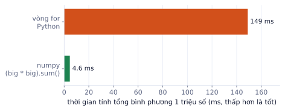

Python thuần tính toán trên từng số một, nên chậm khi dữ liệu có hàng triệu số. numpy cho bạn mảng: một khối số cùng kiểu, tính trên cả khối một lúc bằng code C bên dưới. Bài này đi từ cách tạo mảng, xem shape, lấy phần tử, tới hai ý quan trọng nhất: broadcasting (tính giữa hai mảng khác kích thước) và vector hóa (viết phép tính trên cả mảng thay cho vòng for). Bạn chỉ cần Python ở mức bài P0.1. Ba bài tiếp theo dùng lại đúng các ý ở đây: pandas (P0.3) lọc bảng bằng mặt nạ như numpy, matplotlib (P0.4) vẽ từ mảng numpy, và tensor của PyTorch (P0.6) gần như là mảng numpy chạy được trên GPU.
Mảng numpy: shape, dtype, indexing
Vì sao cần học
List Python chứa được mọi thứ nhưng không biết làm toán: [1, 2] * 2 cho [1, 2, 1, 2] chứ không phải [2, 4]. Mảng numpy là khối số cùng kiểu nằm liền nhau trong bộ nhớ, tính toán trên cả khối bằng code C. Tensor của PyTorch dùng gần như y hệt cách đánh chỉ số và shape của numpy, nên học kỹ ở đây là học luôn cho PyTorch.
Tạo mảng
importnumpyasnpnp.array([1,2,3])# từ listnp.zeros((2,3))# toàn số 0, shape (2, 3)np.ones(4)# [1. 1. 1. 1.]np.arange(0,10,2)# [0 2 4 6 8], giống rangenp.linspace(0,1,5)# [0. 0.25 0.5 0.75 1. ], 5 điểm chia đềurng=np.random.default_rng(0)rng.normal(size=(2,3))# số ngẫu nhiên phân phối chuẩn, cố định seed để chạy lại ra giống nhau
x=np.arange(12).reshape(3,4)# [[ 0 1 2 3]# [ 4 5 6 7]# [ 8 9 10 11]]x.shape# (3, 4) số phần tử theo từng trục: 3 hàng, 4 cộtx.ndim# 2 số trụcx.size# 12 tổng số phần tửx.dtype# int64 kiểu số của mọi phần tử
Kết quả khi chạy
(3, 4)
2
12
dtype('int64')
Shape là thứ bạn kiểm tra nhiều nhất trong cả sự nghiệp ML. Phần lớn lỗi khi viết model là lỗi shape. Thói quen tốt: in x.shape sau mỗi bước biến đổi khi còn chưa chắc.
dtype: kiểu số quyết định kết quả
np.array([1,2,3]).dtype# int64np.array([1,2.5]).dtype# float64 (chỉ cần một số thực là cả mảng thành float)np.array([1,2,3])/2# [0.5 1. 1.5] (chia luôn ra float)a=np.array([1,2,3])a[0]=9.7a# [9 2 3] ← 9.7 bị cắt thành 9 vì mảng là int
Deep learning thường dùng float32 (nửa bộ nhớ so với float64, đủ chính xác). Đổi kiểu bằng x.astype(np.float32).
Lấy phần tử: slicing, mặt nạ, danh sách chỉ số
x[1]# [4 5 6 7] hàng thứ 2 (chỉ số bắt đầu từ 0), shape (4,)x[:,0]# [0 4 8] cột đầu, ":" nghĩa là "lấy hết trục này"x[1:,2:]# [[ 6 7]# [10 11]] từ hàng 1 trở đi, từ cột 2 trở đix[x>5]# [ 6 7 8 9 10 11] mặt nạ boolean: chỉ giữ chỗ True, kết quả luôn 1 chiềux[[0,2]]# hàng 0 và hàng 2 (fancy indexing bằng danh sách chỉ số)
x > 5 tạo một mảng True/False cùng shape với x. Đặt nó vào trong [...] để lọc. Đây chính là cách bạn lọc dữ liệu trong pandas ở P0.3.
reshape và transpose
x.reshape(2,-1).shape# (2, 6) -1 nghĩa là "tự tính": 12 / 2 = 6x.reshape(-1).shape# (12,) duỗi thành 1 chiềux.T.shape# (4, 3) đổi hàng thành cộtx[None].shape# (1, 3, 4) chèn thêm một trục độ dài 1 ở đầu
Kết quả khi chạy
(2, 6)
(12,)
(4, 3)
(1, 3, 4)
reshape không đổi thứ tự các số, chỉ đổi cách "xếp" chúng vào các trục. Tổng số phần tử phải giữ nguyên: x.reshape(5, -1) sẽ báo lỗi vì 12 không chia hết cho 5.
Ghép mảng: concatenate và stack
a=np.array([[1,2],[3,4]])# shape (2, 2)b=np.array([[5,6]])# shape (1, 2)np.concatenate([a,b],axis=0)# (3, 2): nối thêm hàngnp.stack([a,a]).shape# (2, 2, 2): tạo trục MỚI rồi xếp chồngnp.concatenate([a,a],axis=1).shape# (2, 4): nối theo cột
Kết quả khi chạy
array([[1, 2],
[3, 4],
[5, 6]])
(2, 2, 2)
(2, 4)
concatenate nối dọc một trục đã có, số trục giữ nguyên, và mọi trục khác phải bằng nhau. stack tạo trục mới, số trục tăng thêm 1, và các mảng phải cùng shape. Gom 32 ảnh shape (28, 28) thành một batch là np.stack(images), ra (32, 28, 28): đúng việc DataLoader của PyTorch làm cho bạn ở P0.6.
axis: trục bị gộp mất
Các hàm tổng hợp (sum, mean, max, argmax...) nhận tham số axis. Cách nhớ chắc nhất: axis=k là trục biến mất trong kết quả.
x.sum(axis=1) gộp trục 1 (4 cột) → còn shape (3,), mỗi hàng một tổng: [6 22 38].
x.sum() gộp tất cả → một số: 66.
x.mean(axis=1) → [1.5 5.5 9.5]: trung bình mỗi hàng.
Trong ML, dữ liệu thường có shape (số mẫu, số đặc trưng). "Trung bình mỗi đặc trưng" là axis=0; "tổng điểm của từng mẫu" là axis=1.

axis=k là trục biến mất: gộp 3 hàng còn một giá trị mỗi cột (xanh), gộp 4 cột còn một giá trị mỗi hàng (cam).Đào sâu thêm
Mảng nằm trong bộ nhớ thế nào. Mảng (3, 4) kiểu int64 thực chất là 12 số nằm liền nhau (96 byte). numpy ghi thêm strides: phải nhảy bao nhiêu byte để sang phần tử kế tiếp theo mỗi trục. Với x, x.strides là (32, 8): sang hàng sau nhảy 32 byte (4 số × 8 byte), sang cột sau nhảy 8 byte.
Vì vậy x.T (chuyển vị) gần như miễn phí: numpy chỉ đổi strides thành (8, 32) chứ không chép dữ liệu. Slicing x[:, 1:3] cũng chỉ là "nhìn" vào cùng vùng nhớ với strides khác. Đó là lý do slicing trả về view. Đổi sang float32 (x.astype(np.float32)) giảm từ 96 xuống 48 byte, một nửa bộ nhớ: GPU có hạn bộ nhớ nên deep learning hầu như luôn dùng float32 hoặc thấp hơn.
Lỗi hay gặp
Slicing trả về view, không phải bản sao. Sửa trên view là sửa luôn mảng gốc:
v=x[0]# view của hàng 0v[0]=100x[0,0]# 100 ← mảng gốc bị đổi theoc=x[0].copy()# bản sao độc lậpc[0]=-5# x không đổi
Kết quả khi chạy
100
Ngược lại, lọc bằng mặt nạ (x[x > 5]) và danh sách chỉ số (x[[0, 2]]) luôn tạo bản sao. Khi cần sửa một phần dữ liệu mà không muốn ảnh hưởng bản gốc, gọi .copy() cho chắc.
Tự kiểm tra nhanh
Với x = np.arange(12).reshape(3, 4) như trên, tính bằng tay:
Broadcasting
Vì sao cần học
Bạn sẽ liên tục làm phép tính giữa mảng lớn và mảng nhỏ: trừ trung bình của từng cột, cộng bias vào từng hàng, nhân trọng số. Broadcasting cho phép viết những phép đó trong một dòng mà không cần copy dữ liệu, và cũng là nguồn lỗi im lặng phổ biến nhất trong code ML.
Quy tắc
Khi tính a + b với hai shape khác nhau, numpy làm ba bước:
Căn phải hai shape. Nếu một bên ít trục hơn, coi như có thêm trục độ dài 1 ở bên trái.
So từng cặp kích thước từ phải sang trái: khớp nếu bằng nhau, hoặc một trong hai bằng 1.
Trục nào bằng 1 sẽ được "kéo dài" cho bằng bên kia (không tốn bộ nhớ thật). Nếu có cặp không khớp, báo lỗi.
a
b
căn phải
kết quả
(4, 3)
(3,)
(4, 3) với (1, 3)
(4, 3): b cộng vào từng hàng
(4, 3)
(4, 1)
(4, 3) với (4, 1)
(4, 3): b cộng vào từng cột
(4, 3)
(4,)
(4, 3) với (1, 4)
lỗi: 3 và 4 không khớp
(3, 1)
(1, 4)
(3, 1) với (1, 4)
(3, 4): cả hai cùng được kéo dài
Ví dụ: chuẩn hóa từng cột
Đặc trưng có thang đo khác nhau (diện tích tính bằng m², giá tính bằng triệu) làm model học chậm. Chuẩn hóa đưa mỗi cột về trung bình 0, độ lệch chuẩn 1:
Bước broadcasting: X shape (3, 2), mu shape (2,) được căn phải thành (1, 2), rồi kéo dài thành (3, 2): hàng nào cũng trừ cùng một vector mu. Sau chuẩn hóa hai cột có cùng thang đo dù ban đầu chênh nhau 200 lần.

Trái: vector b shape (3,) được kéo dài thành 4 hàng rồi cộng vào A. Phải: cột (3, 1) nhân hàng (1, 4) cho bảng (3, 4).
[:, None] biến vector thành cột, [None, :] biến thành hàng. Đây là mẹo bạn sẽ gặp lại trong attention ở P3 và khoảng cách giữa các điểm ở phần tiếp theo.
Lỗi hay gặp
Shape (n,) và (n, 1) trộn nhau. Lỗi này không báo đỏ, chỉ cho ra số sai:
y=np.array([1.,2.,3.])# nhãn thật, shape (3,)y_pred=np.array([[1.],[2.],[4.]])# model trả về shape (3, 1)(y_pred-y).shape# (3, 3) ← broadcasting thành ma trận 3x3!((y_pred-y)**2).mean()# 2.33 sai((y_pred.ravel()-y)**2).mean()# 0.33 đúng
Kết quả khi chạy
(3, 3)
2.3333333333333335
0.3333333333333333
Mỗi khi tính loss bằng tay, in shape của dự đoán và nhãn, hoặc dùng .ravel() / .reshape(-1) để đưa cả hai về 1 chiều.
Vector hóa thay vòng for
Vì sao cần học
Dữ liệu thật có hàng triệu dòng. Cùng một phép tính, viết bằng vòng for có thể mất vài phút; viết vector hóa mất vài giây. Đây cũng là cách tư duy của GPU: làm cùng một phép tính trên cả khối dữ liệu một lúc.
Vì sao nhanh hơn
Mỗi vòng lặp Python phải kiểm tra kiểu của biến, tra cứu phép toán, tạo đối tượng số mới. Phép toán numpy làm việc đó một lần cho cả mảng, rồi chạy vòng lặp bằng C trên vùng nhớ liền nhau (và tận dụng lệnh SIMD của CPU).
big=np.random.default_rng(0).random(1_000_000)s=0.0forvinbig:# khoảng 150 mss+=v*vs2=(big*big).sum()# khoảng 5 ms, nhanh hơn khoảng 30 lần
Kết quả khi chạy
(chạy xong, không in ra gì)
Con số cụ thể tùy máy, nhưng chênh lệch vài chục đến vài trăm lần là bình thường.

Đo trên máy chủ chạy bài này: cùng một phép tính, vòng for chậm hơn khoảng 30 lần.
Các hàm thay thế vòng lặp hay dùng
z=np.array([-2.,0.5,3.,-1.])np.where(z>0,z,0)# [0. 0.5 3. 0. ] ReLU: giữ số dương, còn lại thành 0np.clip(z,-1,1)# [-1. 0.5 1. -1. ] chặn trong khoảng [-1, 1]np.cumsum([1,2,3,4])# [ 1 3 6 10] tổng tích lũyz.argmax()# 2 chỉ số của phần tử lớn nhấtnp.argsort(-z)[:2]# [2 1] chỉ số của 2 phần tử lớn nhất (top-k)
Bài toán: có n điểm trong A và m điểm trong B (mỗi điểm d chiều), cần ma trận khoảng cách D shape (n, m). Bạn sẽ dùng đúng phép này ở k-means (P1) và tìm kiếm vector (P4).
A[:, None, :] chèn trục ở giữa: mỗi điểm của A thành một "hàng" riêng.
B[None, :, :] chèn trục ở đầu: cả B thành một khối.
Phép trừ broadcasting thành (2, 3, 2): phần tử diff[i, j] là vector A[i] - B[j].
Bình phương, cộng theo trục tọa độ, lấy căn: ra khoảng cách Euclid.
Kiểm tra một ô: D[1, 1] là khoảng cách từ (3, 4) tới (6, 8) = √(3² + 4²) = 5. Đúng.
Ghi nhớ: trước khi viết vòng for trên mảng, hỏi: "phép này viết trên cả mảng được không?". Hầu như luôn được, nhờ broadcasting, mặt nạ và các hàm như where, cumsum, argsort.
Đào sâu thêm
So sánh số thực. Máy tính lưu số thực ở dạng nhị phân nên 0.1 + 0.2 == 0.3 cho False. Khi kiểm tra kết quả tính toán (ví dụ so code của bạn với PyTorch trong notebook), dùng np.isclose(a, b) hoặc np.allclose(A, B, atol=1e-6) thay cho ==. Các ô tự chấm trong lộ trình này đều so theo cách đó.
Lỗi hay gặp
Mảng trung gian quá lớn. Ví dụ khoảng cách ở trên tạo mảng diff shape (n, m, d). Với 100.000 × 100.000 điểm 128 chiều, mảng đó cần hơn 10 TB. Khi n·m·d lớn, chia A thành từng khúc (ví dụ 1.000 điểm) rồi tính lần lượt, hoặc dùng công thức ‖a − b‖² = ‖a‖² + ‖b‖² − 2a·b để chỉ cần ma trận (n, m).
Tóm tắt bài và thuật ngữ
Chủ đề
Điều cần nhớ
Lệnh tiêu biểu
Mảng
shape là thứ cần kiểm tra nhiều nhất; slicing là view
x.shape, x.reshape(-1), x.copy()
axis
axis=k là trục biến mất
X.mean(axis=0)
Ghép mảng
concatenate nối trục có sẵn, stack tạo trục mới
np.stack(images)
Broadcasting
căn phải, so từng cặp, bằng nhau hoặc bằng 1
A[:, None] - B[None, :]
Vector hóa
thay vòng for bằng phép trên cả mảng
np.where, argsort, cumsum
Thuật ngữ
Nghĩa
array / ndarray
mảng nhiều chiều của numpy, mọi phần tử cùng kiểu
shape
số phần tử theo từng trục, ví dụ (3, 4)
dtype
kiểu số của mảng: int64, float32, bool...
axis
một trục của mảng; axis=0 là trục hàng
view / copy
view dùng chung bộ nhớ với mảng gốc, copy thì độc lập
broadcasting
cơ chế tự kéo dài trục độ dài 1 khi tính giữa hai mảng khác shape
vectorization
viết phép tính trên cả mảng thay vì từng phần tử
Làm bằng giấy bút trước, rồi kiểm tra lại bằng code nếu muốn.
Ô tự chấm đã giải đúng0 / 6
Bài 1
Đoán shape
tính tay
Cho a = np.zeros((4, 3)), b = np.ones(3), x = np.zeros((2, 3, 4)).
(a + b).shape có bao nhiêu hàng, bao nhiêu cột?
x.reshape(-1, 4).shape[0] bằng bao nhiêu?
x.sum(axis=1).shape có dạng (p, q). Tìm p, q.
Gợi ý
Với reshape(-1, 4), tổng số phần tử giữ nguyên: 2·3·4 = 24, chia cho 4. Với sum(axis=1), trục thứ hai (độ dài 3) bị gộp mất.
Lời giải
b shape (3,) khớp với trục cuối của a nên kết quả (4, 3). reshape(-1, 4) cho (6, 4). sum(axis=1) bỏ trục độ dài 3, còn (2, 4).
Bài 2
Tính theo trục
tính tay
a = np.arange(6).reshape(2, 3), tức là [[0, 1, 2], [3, 4, 5]].
Lời giải
sum(axis=0) cộng dọc các hàng: [3, 5, 7], phần tử thứ 3 là 7. mean(axis=1) lấy trung bình mỗi hàng: [1, 4]. max(axis=0) lấy max mỗi cột: [3, 4, 5], tổng 12.
Bài 3
One-hot không dùng vòng for
code
Viết hàm one_hot(y, k) nhận mảng nhãn số nguyên y shape (n,) và trả về ma trận (n, k), hàng i có số 1 ở cột y[i]. Không dùng vòng for.
importnumpyasnpdefone_hot(y,k):# TODO: viết code của bạn ở đây, không dùng vòng for...y=np.array([2,0,1])print(one_hot(y,3))# kết quả mong muốn:# [[0. 0. 1.]# [1. 0. 0.]# [0. 1. 0.]]
Code của bạn
Viết code vào chỗ trống rồi bấm Chạy.
Gợi ý
Ma trận đơn vị np.eye(k) có hàng j chính là one-hot của j. Bạn chỉ cần chọn đúng các hàng.
Code tham khảo
defone_hot(y,k):returnnp.eye(k)[y]# cách khác, không tạo ma trận k×k:defone_hot2(y,k):out=np.zeros((len(y),k))out[np.arange(len(y)),y]=1returnout
Kết quả khi chạy
(chạy xong, không in ra gì)
Bài 4
Khoảng cách từng cặp
code
Viết pairwise_dist(A, B) với A shape (n, d), B shape (m, d), trả về (n, m) khoảng cách Euclid. Sau đó đo thời gian so với bản hai vòng for trên n = m = 500, d = 64.
Code tham khảo
importtimeimportnumpyasnpdefpairwise_dist(A,B):returnnp.sqrt(((A[:,None,:]-B[None,:,:])**2).sum(-1))defpairwise_loop(A,B):D=np.zeros((len(A),len(B)))foriinrange(len(A)):forjinrange(len(B)):D[i,j]=np.sqrt(((A[i]-B[j])**2).sum())returnDA,B=np.random.rand(500,64),np.random.rand(500,64)t=time.time();D1=pairwise_dist(A,B);t1=time.time()-tt=time.time();D2=pairwise_loop(A,B);t2=time.time()-tprint(np.allclose(D1,D2),f"nhanh hơn {t2/t1:.0f} lần")
Kết quả khi chạy
True nhanh hơn 5 lần
Bài 5
Softmax ổn định số
code
Viết softmax(Z) cho ma trận Z shape (n, k): mỗi hàng là điểm (logit) của một mẫu, kết quả mỗi hàng là xác suất cộng lại bằng 1. Hàm phải chạy đúng cả với logit rất lớn như [1000, 1001, 1002], và không dùng vòng for.
Gợi ý
exp(1000) tràn số thành inf. Softmax không đổi khi trừ cùng một số khỏi cả hàng, nên trừ giá trị lớn nhất của từng hàng trước (max(axis=1, keepdims=True) giữ shape (n, 1) để broadcasting đúng).
Code tham khảo
importnumpyasnpdefsoftmax(Z):Z=np.asarray(Z,dtype=float)E=np.exp(Z-Z.max(axis=-1,keepdims=True))# trừ max từng hàng: số lớn nhất thành 0, exp không trànreturnE/E.sum(axis=-1,keepdims=True)P=softmax([[1.,2.,3.],[1000.,1001.,1002.]])print(P.round(3))# hai hàng giống nhau: chỉ chênh lệch giữa các logit là quan trọngprint(P.sum(axis=1))# mỗi hàng cộng lại bằng 1
Kết quả khi chạy
[[0.09 0.245 0.665]
[0.09 0.245 0.665]]
[1. 1.]
Bài 6
Chỉnh ảnh xám bằng mảng
ứng dụng
Dùng: dtype, slicing, mặt nạ boolean, np.clip.
Ảnh xám là mảng 2 chiều, mỗi ô là độ sáng từ 0 (đen) tới 255 (trắng), kiểu uint8. Với ảnh mẫu dưới (10 × 10, sáng dần từ trái sang phải), hãy: (1) cắt lấy vùng giữa 6 × 6; (2) lật ngang ảnh; (3) tăng sáng thêm 100 mà không bị tràn số; (4) đếm số điểm ảnh sáng hơn 200 sau khi tăng sáng.
importnumpyasnpimg=np.tile(np.arange(0,250,25,dtype=np.uint8),(10,1))# 10 hàng giống nhau: 0, 25, ..., 225print(img[0],img.dtype)print("cộng thẳng 100 vào uint8:",(img+np.uint8(100))[0])# 200 + 100 = 44: tràn số!# TODO: center, flipped, bright, n_sang
Code của bạn
Viết code vào chỗ trống rồi bấm Chạy.
Gợi ý
Vùng giữa: img[2:8, 2:8]. Lật ngang: đảo thứ tự cột img[:, ::-1]. Tăng sáng: đổi sang int trước để không tràn, cộng, np.clip(..., 0, 255), rồi đổi lại uint8. Đếm: (bright > 200).sum().
uint8 chỉ chứa 0–255; vượt quá thì quay vòng (300 thành 44). Lỗi này không báo gì mà làm ảnh hỏng, rất hay gặp khi tự viết augmentation cho ảnh.
Bài 7
Bảng điểm cả lớp
ứng dụng
Dùng: axis, argmax, broadcasting, mặt nạ với .all.
Điểm của 5 bạn ở 4 môn (hàng là học sinh, cột là môn). Tính: điểm trung bình từng môn, điểm trung bình từng bạn, bạn có trung bình cao nhất, chuẩn hóa từng môn về trung bình 0 (để so được giữa môn dễ và môn khó), và số bạn không có môn nào dưới 5.
Trung bình từng môn là gộp các hàng: axis=0. Từng bạn: axis=1. Chuẩn hóa: (diem - tb_mon) / diem.std(axis=0), broadcasting tự kéo tb_mon shape (4,) ra mọi hàng. "Không môn nào dưới 5": (diem >= 5).all(axis=1) cho mỗi bạn một True/False.
Một cảm biến nhiệt độ ghi mỗi giờ một số, liền 7 ngày, thành một mảng phẳng 168 số. Đưa về bảng (ngày × giờ), tìm nhiệt độ cao nhất mỗi ngày và giờ đạt nhiệt độ cao nhất, rồi nối thêm dữ liệu ngày thứ 8.
importnumpyasnpgio=np.arange(168)temp=27+5*np.sin((gio%24-8)/24*2*np.pi)+np.repeat(np.arange(7)*0.5,24)# nóng nhất buổi chiều, ấm dần qua các ngàyngay_8=31+5*np.sin((np.arange(24)-8)/24*2*np.pi)# TODO: bang (7, 24), max_ngay, gio_nong, bang8 (8, 24)
Code của bạn
Viết code vào chỗ trống rồi bấm Chạy.
Gợi ý
temp.reshape(7, 24): mỗi hàng một ngày. Max mỗi ngày gộp các giờ: axis=1. Giờ đạt max: argmax(axis=1). Nối ngày 8: np.concatenate([bang, ngay_8[None, :]], axis=0) (ngay_8 phải thành shape (1, 24) trước).
Dùng: np.where, np.clip, np.cumsum, argmax trên mặt nạ.
Doanh số 10 ngày của một nhân viên (triệu đồng). Hoa hồng mỗi ngày là 5% nếu doanh số dưới 20 triệu, 8% nếu từ 20 triệu trở lên, nhưng tối đa 2 triệu một ngày. Tính tổng hoa hồng, và ngày đầu tiên (đếm từ 1) doanh số cộng dồn đạt mục tiêu 120 triệu. Không dùng vòng for.
np.where(doanh_so >= 20, 0.08, 0.05) * doanh_so rồi np.clip(..., None, 2) (chỉ chặn trên). Cộng dồn: np.cumsum(doanh_so). (cong_don >= muc_tieu).argmax() cho vị trí True đầu tiên (đếm từ 0).
Sau đó đo thời gian standardize với bản vòng for trên X shape (100.000, 20).
Xong khi
Ô kiểm tra in "Qua hết kiểm tra".
Bản vector hóa nhanh hơn bản vòng for ít nhất 20 lần (con số cụ thể tùy máy).
Code tham khảo
importtimeimportnumpyasnpdefstandardize(X):return(X-X.mean(axis=0))/X.std(axis=0)defone_hot(y,k):returnnp.eye(k)[y]defsoftmax(Z):E=np.exp(Z-Z.max(axis=-1,keepdims=True))returnE/E.sum(axis=-1,keepdims=True)deftopk(scores,k):returnnp.argsort(-scores,axis=-1)[...,:k]defaccuracy(pred,true):return(pred==true).mean()defpairwise_dist(A,B):returnnp.sqrt(((A[:,None,:]-B[None,:,:])**2).sum(-1))defstandardize_loop(X):out=np.empty_like(X)forjinrange(X.shape[1]):col=[X[i,j]foriinrange(X.shape[0])]m=sum(col)/len(col)s=(sum((v-m)**2forvincol)/len(col))**0.5foriinrange(X.shape[0]):out[i,j]=(X[i,j]-m)/sreturnoutX=np.random.default_rng(1).normal(size=(100_000,20))t=time.time();A=standardize(X);t1=time.time()-tt=time.time();B=standardize_loop(X);t2=time.time()-tprint(np.allclose(A,B),f"nhanh hơn {t2/t1:.0f} lần")
Xong bài khiMọi hàm qua kiểm tra, và bản vector hóa nhanh hơn bản vòng for ít nhất 20 lần.